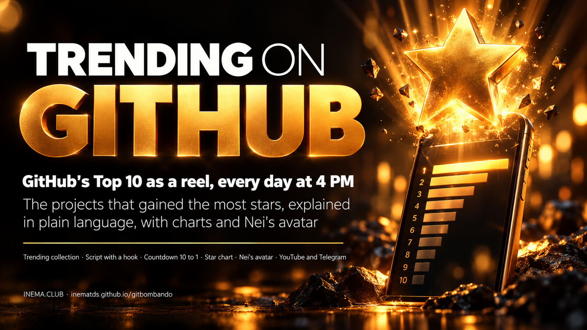
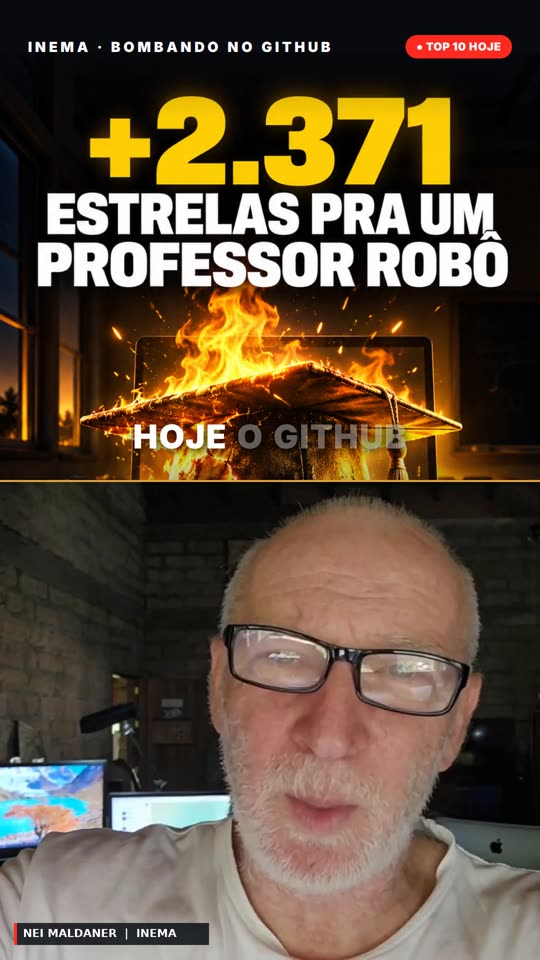
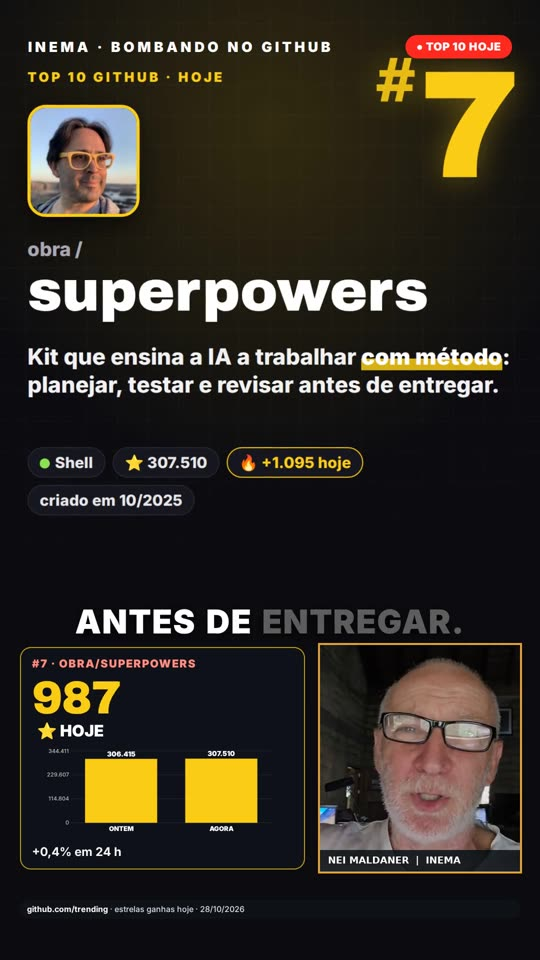

Every day at 4 pm, a reel goes out on its own with the 10 projects that gained the most stars, from #10 to #1, with a chart, a simple explanation and Nei's avatar. Sunday brings the week's edition; the 1st of each month, the month's.

gitbombando is an automatic production line for short videos. Every day at 4 pm it checks GitHub's trending projects page, picks the 10 that gained the most stars and builds a vertical reel explaining each one in plain language, with a card, a counter and a chart. It's for anyone who wants to know what's hot in tech and AI without reading English or code. The video goes out on its own to YouTube (INEMA Tec), to Nei's bot and to a fixed topic in the INEMA.TOOLS Telegram group. To run it, you need the INEMA machine with Python, Node, Codex, Claude Code and a HeyGen subscription.
It combines the r7ex newscast engine (which came from eventosextremospub) with its own GitHub Trending collector.
The opening leads with the day's strongest fact (the #1's number, a big tech company, a controversial project) in a headline drawn on the cover. A list ("the 10 projects…") is banned from the opening.
A card with the rank, the owner's photo, what it does in plain words and its stars; below it, the counter reaches the number as it's spoken, and the chart shows the star curve or the "before × now".
A timer at 4 pm, script and review by Claude, avatar in the HeyGen studio, publishing on lives4, a notice on the v3 bot and a post in the same Telegram topic.
Each stage saves a file in the edition folder (edicoes/AAAA-MM-DD-top10-dia/); if one fails, Nei gets a "Failed" message on the bot with the reason.
The timer calls auto/rodar.sh at 4 pm: always the day's Top 10; on Sunday also the week's; on the 1st also the month's.
The Top 10 is sorted by stars gained in the period, among the projects on Trending (the page's own order mixes in other signals).
A claude -p looks at 18 frames of the video. A visible defect (wrong title, empty frame, swapped number) stops everything; suggestions go along to Nei.
It's the same machine that already runs r7ex and eventosextremospub.
The collector uses the GitHub API through gh, already logged in.
# check gh auth status
Script and review by claude -p; cover by Codex image_gen. Both through the subscription.
# check claude --version && codex --version
Rendering in Playwright's Chrome, editing in ffmpeg, inemavox's Whisper for word timing.
# install the engine cd ~/projetos/gitbombando && npm install
Logged-in profile at ~/.cache/inemaccbot/perfil-heygen, display :99 (stack99). Avatar through the studio, never through the API.
# display :99 must be up systemctl --user status stack99
Publishes to the lives4 channel (INEMA Tec) with title, description and tags.
~/projetos/yt-pubx/yt-pubx canais | grep lives4The telegramtopicosindex session (Nei's account) to post in the fixed INEMA.TOOLS topic.
ls ~/projetos/telegramtopicosindex/telegram_session.sessionOnce it's on, you don't have to do anything: the video goes out at 4 pm. The steps below are for installing, testing and fixing.
The hourly snapshot builds the star curve; the 4 pm one makes and publishes the reel.
cp auto/systemd/gitbombando* ~/.config/systemd/user/ systemctl --user daemon-reload systemctl --user enable --now gitbombando-retrato.timer gitbombando.timer # check with: systemctl --user list-timers | grep gitbomb
Just the collection: it saves pesquisa/top10.json with each project's stars, description, README and growth.
python3 coleta/trending.py edicoes/teste dia # or semana / mes
It does everything, avatar included, but doesn't upload to YouTube, the bot, Telegram or git. The log goes to rodada.log and the frame sheet to build/folha.jpg.
SEM_YT=1 SEM_BOT=1 SEM_TG=1 SEM_GIT=1 auto/rodar.sh 2026-10-28 dia
When the reviewer rejects it, the video doesn't go out and the bot lets you know. If you think it's fine, publish it by hand: lives4, the v3 bot and the INEMA.TOOLS topic.
python3 gb.py publicar edicoes/2026-10-28-top10-dia
gb.py has one command per stage; each one reads the folder's ficha.yaml and top10.json.
python3 gb.py checar edicoes/<pasta> # script gate python3 gb.py imagens edicoes/<pasta> # cover, ranking, 10 cards python3 gb.py cena edicoes/<pasta> # timings + pacing + cena.js python3 gb.py render edicoes/<pasta> # video.mp4 python3 gb.py revisar edicoes/<pasta> # frame sheet + reviewer
A line with the date skips everything; with the date and the mode, it skips only that one.
echo "2026-11-02" >> auto/pular.txt # skips the whole day echo "2026-11-02 semana" >> auto/pular.txt # skips only the week's edition
DeepTutor, a personal AI tutor, came in 1st with 2,371 stars that day.


Version 1.0.0, 10/28/2026.